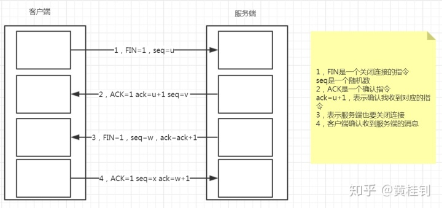
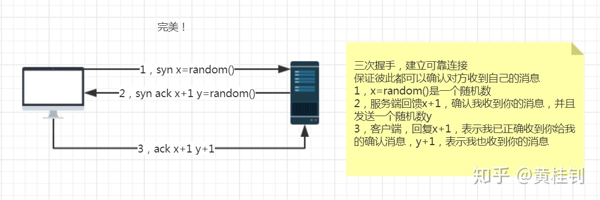
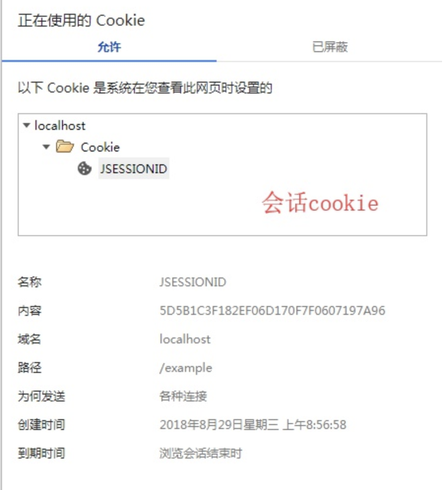
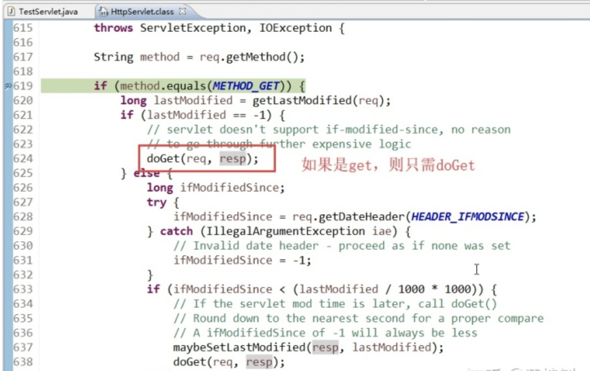
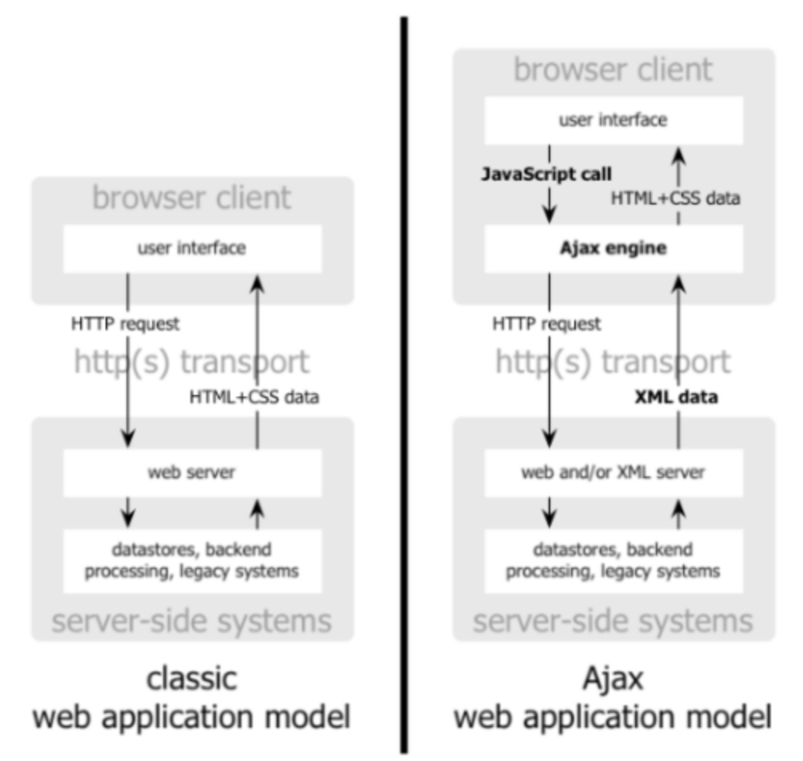
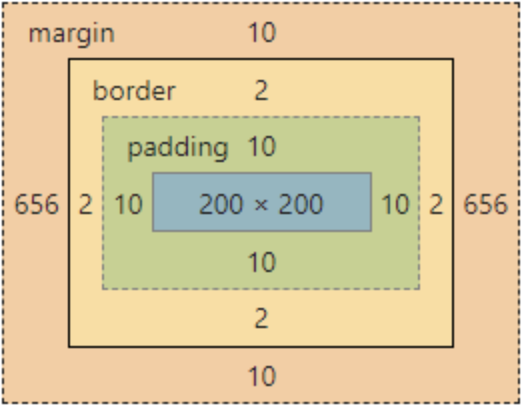

Web¶
从浏览器输入URL到页面加载完毕，都经历了什么¶
首先，需要经过DNS（域名解析服务）将URL转换为对应的ip地址，实际上域名只是方便我们记忆，在网络上的每台主机交互的地址都是IP。
其次，我们需要通过这个ip地址跟服务器建立TCP网络连接，随后向我们的服务器发出http请求。注意，http协议是tcp的上层协议
最后，服务器接收到我们的请求，处理完毕之后，将响应数据放入到http的响应信息中，然后返回给客户端。
客户端浏览器完成对服务器响应信息的渲染，将信息展现在用户面前。
常见的响应状态码：
200,500,404,400,405,301这些你知道什么意思吗？
谈谈什么是TCP的四次挥手¶
大家可以思考一个问题，为什么要四次挥手，原因是TCP连接是一种双工的通信模式。

谈谈什么是TCP的三次握手¶
来，看图，个人觉得很完美的一张图，不接受反驳

说说TCP和UDP的区别¶
首先，两者都是传输层的协议。
其次，
tcp提供可靠的传输协议，传输前需要建立连接，面向字节流，传输慢
udp无法保证传输的可靠性，无需创建连接，以报文的方式传输，效率高
什么是XSS攻击¶
XSS攻击，俗称跨站点脚本攻击，
其原理是往网页添加恶意的执行脚本，比如js脚本。
当用户浏览该网页时，嵌入其中的脚本就会被执行，从而达到攻击用户的目的。
比如盗取客户的cookie，重定向到其他有毒的网站等等。
比如写一段js脚本（这还是很有善意的脚本）
for(var i=1;i<100;i++){
alert("努力不一定成功，但不努力一定很舒服！");
}
这个时候的解决办法，是采用拦截器或过滤器对输入的信息做过滤处理。比如将执行脚本的符号做一些替换处理。
转发和重定向的区别¶
转发： 发生在服务器内部的跳转，所以，对于客户端来说，至始至终就是一次请求，所以这期间，保存在request对象中的数据可以传递
重定向： 发生在客户端的跳转，所以，是多次请求，这个时候，如果需要在多次请求之间传递数据，就需要用session对象
在后台程序，想跳转到百度，应该用转发还是重定向¶
重定向，因为转发的范围限制在服务器内部
描述Session跟Cookie的区别（重要）¶
1. 存储的位置不同¶
Session：服务端
Cookie：客户端
2.存储的数据格式不同¶
Session：value为对象，Object类型
Cookie：value为字符串，如果我们存储一个对象，这个时候，就需要将对象转换为JSON
3. 存储的数据大小¶
Session：受服务器内存控制
Cookie：一般来说，最大为4k
4. 生命周期不同¶
Session：服务器端控制，默认是30分钟，注意，当用户关闭了浏览器，session并不会消失
Cookie：客户端控制，其实是客户端的一个文件，分两种情况
-
默认的是会话级的cookie，这种随着浏览器的关闭而消失，比如保存sessionId的cookie
-
非会话级cookie，通过设置有效期来控制，比如这种“7天免登录”这种功能， 就需要设置有效期，setMaxAge
cookie的其他配置
httpOnly=true：防止客户端的XSS攻击 path="/" ：访问路径 domain=""：设置cookie的域名
5. cookie跟session之间的联系¶
http协议是一种无状态协议，服务器为了记住用户的状态，我们采用的是Session的机制
而Session机制背后的原理是，服务器会自动生成会话级的cookie来保存session的标识，如下图所示：

JSP的4大域对象¶
4大域对象¶
ServletContext context域
HttpSession session域
HttpServletRequet request域
PageContext page
4大域对象的作用范围¶
page域: 只能在当前jsp页面使用 (当前页面)
request域: 只能在同一个请求中使用 (转发才有效，重定向无效)
session域: 只能在同一个会话(session对象)中使用 (私有的，多个请求和响应之间)
context域: 只能在同一个web应用中使用 (全局的)
描述JSP的9大内置对象（不重要）¶
首先，对于我们现在来说，用JSP的内置对象来直接开发的基本没有了，除非是比较老旧的项目，jsp的内置对象，则是不需要在jsp页面中创建，直接可以使用。
其实，我们通过观察jsp生成的java文件可以发现，其背后是帮我们创建了这些对象，所以对象的创建方式还是没有改变的。
我们去观察背后生成java类，那么里面是有给各个对象创建及初始化的代码(截取部分代码片段)
public void _jspService(final javax.servlet.http.HttpServletRequest request, final javax.servlet.http.HttpServletResponse response)
pageContext = _jspxFactory.getPageContext(this, request, response, null, true, 8192, true);
_jspx_page_context = pageContext;
application = pageContext.getServletContext();
config = pageContext.getServletConfig();
session = pageContext.getSession();
out = pageContext.getOut();
_jspx_out = out;
....
记得多少回答多少即可。
| 内置对象名 | 类型 |
|---|---|
| request | HttpServletRequest |
| response | HttpServletResponse |
| config | ServletConfig |
| application | ServletContext |
| session | HttpSession |
| exception | Throwable |
| page | Object(this) |
| out | JspWriter |
| pageContext | PageContext |
描述JSP和Servlet的区别¶
技术的角度¶
JSP本质就是一个Servlet
JSP的工作原理：JSP->翻译->Servlet(java)->编译->Class（最终跑的文件）
应用的角度¶
JSP=HTML+Java
Servlet=Java+HTML
各取所长，JSP的特点在于实现视图，Servlet的特点在于实现控制逻辑
谈谈Servlet的生命周期¶
先要明确一点，Servlet是单实例的，这个很重要！
生命周期的流程¶
创建对象-->初始化-->service()-->doXXX()-->销毁
创建对象的时机¶
1 默认是第一次访问该Servlet的时候创建
2 也可以通过配置web.xml，来改变创建时机，比如在容器启动的时候去创建，DispatcherServlet(SpringMVC前端控制器)就是一个例子
<load-on-startup>1</load-on-startup>
执行的次数¶
对象的创建只有一次，单例
初始化一次
销毁一次
关于线程安全¶
构成线程不安全三个因素：
1 多线程的环境（有多个客户端，同时访问Servlet）
2 多个线程共享资源，比如一个单例对象（Servlet是单例的）
3 这个单例对象是有状态的（比如在Servlet方法中采用全局变量，并且以该变量的运算结果作为下一步操作的判断依据）
伪代码,演示线程不安全的操作方式¶
public class MyServlet extends HttpServlet{
private int ticket = 100;
public void doXXX(){
if(ticket > 0){
//......
ticket--;
}
}
}
所以，我们要避免在Servlet中做上述类似的操作！
分析Servlet内部源码，关于Service对请求的分发处理逻辑，会调用相应的doXXX方法

浅谈JavaScript的原型机制¶
JavaScript的原型有一个关键的作用就是来扩展其原有类的特性，比如下面这段代码，给String扩展了hello方法。很多的框架就是采用这种方式来进行扩展，从而让框架更易用。
var str="a";
String.prototype.hello = function(){
alert("通过原型机制来扩展其原有类的特性");
}
str.hello();
谈谈Ajax的工作原理¶
谈这个问题的关键三要素，异步交互，XMLHttpRequest对象，回调函数。
下面，看图，传统模式跟Ajax工作模式的对比：

早期，预计是以XML为主要的传输数据格式，所以Ajax的最后一个字母就是代表XML的意思，不过现在基本是json为主。
JavaScript如何处理兼容性问题¶
什么是兼容性问题¶
因为历史原因，不同浏览器支持的方法或属性有差异
解决办法¶
-
判断当前是哪款浏览器内核，然后调用这个内核支持的方法，但获取内核的方式，通常会有误差
-
存在性检查的方式(推荐) > 如果当前的对象或方法存在，则会是true，进入if，否则进入false
案例：比如判断当前浏览器是否支持trim()方法¶
if(email.value.trim){
if(email.value.trim() == ""){
email.value = "请输入邮箱地址";
}
}else{
//正则表达式-去除前后空格
if(email.value.replace(/(^\s+)|(\s+$)/g,"") == ""){
email.value = "请输入邮箱地址";
}
}
JavaScript提供了哪些定时器¶
定时器在js中的应用非常广泛，比如首页的轮播图效果，网页的时钟，秒杀倒计时等等
就是采用定时器来实现的。
那么主要提供了两种定时器：一次性的和周期性的定时器
<script type="text/javascript">
//一次性的
window.setTimeout(function () {
alert(1);
},1000)
//周期性的
window.setInterval(function () {
alert(2);
},1000)
</script>
谈谈对CSS盒子模型的理解¶
一图胜千言

padding:内边距
border：边框
margin：外边距
div+css，通常就用于布局。